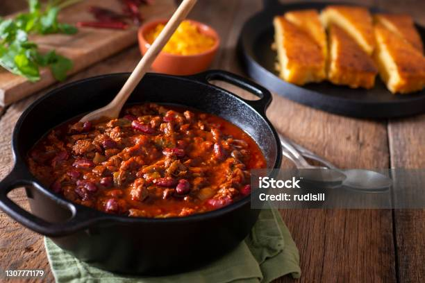

Turkey Chili

Description
Easily made in less than 30 minutes, this Southwestern classic has smoke and heat from the chipotle pepper.
If you're going the meatless route, use soy crumbles instead of turkey and enjoy with cilantro, sour cream, tortilla chips or avocado!
Ingredients
- 3 tablespoons extra-virgin olive oil
- 1 medium yellow onion, chopped
- 5 cloves garlic, chopped
- 1 tablespoon kosher salt
- 2 teaspoons chili powder
- 1 teaspoon dried oregano
- 1 tablespoon tomato paste
- 1 chipotle chile en adobo, coarsely chopped, with 1 tablespoon sauce
- 1 pound ground turkey or 12 ounces soy crumbles
- One 12-ounce Mexican lager-style beer
- One 14 1/2-ounce can whole peeled tomatoes, with their juice
- One 15 1/2-ounce can kidney beans, rinsed and drained
Steps
- Heat the olive oil in a large, heavy skillet over medium-high heat. Add the onion, garlic, salt, chili powder, and oregano and cook, stirring, until fragrant, about 3 minutes.
- Stir in the tomato paste and the chipotle chile and sauce; cook 1 minute more.
- Add the turkey, breaking it up with a wooden spoon, and cook until the meat loses its raw color, about 3 minutes.
- Add the beer and simmer until reduced by about half, about 8 minutes.
- Add the tomatoes--crushing them through your fingers into the skillet--along with their juices and the beans; bring to a boil.
- Cook, uncovered, stirring occasionally, until thick, about 10 minutes.
- Ladle the chili into bowls and serve with the garnishes of your choice.
Homepage